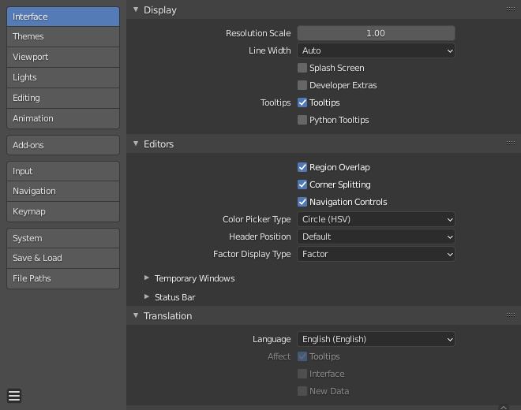

简介¶
参考
- 菜单
- 快捷键
F4, P
本章介绍如何使用 偏好设置 编辑器更改Blender的默认配置。
Blender 偏好设置 包含用于控制Blender行为方式的设置。在编辑器的左侧，可用选项分为几个部分。

Blender偏好设置窗口。¶
管理偏好设置¶
默认偏好设置是通过偏好设置窗口中的 菜单进行管理。
此菜单中提供以下可用选项：
- 自动保存偏好设置
By default changes to preferences are saved on exit, this allows changes to the keymap and Quick Favorites menu to be stored and used between sessions.
禁用时，将显示一个 保存偏好设置 按钮以手动执行保存操作。
- 恢复为已保存的偏好设置
撤消任何未保存的修改，加载前次保存的状态。
- 加载初始偏好设置
完全撤消对偏好设置所做的所有修改，恢复到进行自定义之前使用的状态。
Note
After running Load Factory Preferences, auto-save will be disabled for the current session.
这允许你切换回初始设置以进行测试或以遵循示例教程，免去意外自动保存覆盖您手动配置的偏好设置的风险。
如果你希望将这些设置保存为偏好设置，请手动点击 保存偏好设置。
Note
这仅仅重置偏好设置，不会影响存储在启动文件中的设置。这包括应用程序模板、区域位置以及不属于偏好设置的任何Blender属性。
要还原这些必须通过 来还原。